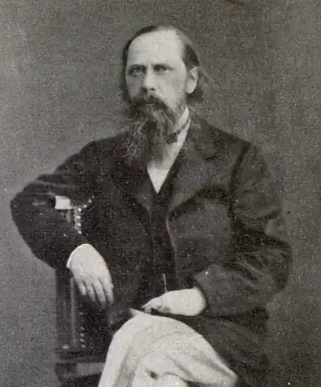

(1826 — 1889)
Народився 15 січня (27 н.с.) в селі Спас-Кут Тверской губернії в старовинній дворянській родині. Дитячі роки пройшли в родовому маєтку батька в "... роки ... самого розпалу кріпосного права", в одному з глухих кутів "Пошехонья". Спостереження за цим життям знайдуть згодом відображення в книгах письменника.
Отримавши хорошу домашню освіту, Салтиков в 10 років був прийнятий пансіонером в Московський дворянський інститут, де провів два роки, потім в 1838 переведений в Царськосельський ліцей. Тут почав писати вірші, випробувавши великий вплив статей Бєлінського і Герцена, творів Гоголя. У 1844 після закінчення ліцею служив чиновником у канцелярії Військового міністерства. "... Скрізь борг, скрізь примус, скрізь нудьга і брехня ..." — таку характеристику дав він бюрократичному Петербургу. Інше життя більш приваблювала Салтикова: спілкування з літераторами, відвідування "п'ятниць" Петрашевського, де збиралися філософи, вчені, літератори, військові, об'єднані антикрепостническими настроями, пошуками ідеалів справедливого суспільства. Перші повісті Салтикова "Суперечності" (1847), "Заплутана справа" (1848) своєю гострою соціальною проблематикою звернули на себе увагу влади, наляканих французькою революцією 1848. Письменник був висланий до Вятки за "... шкідливий образ думок і згубне прагнення до поширення ідей, протрясшіх вже всю Західну Європу ... ". Протягом восьми років жив у В'ятці, де в 1850 був призначений на посаду радника в губернському правлінні. Це дало можливість часто бувати у відрядженнях і спостерігати чиновний світ і селянське життя. Враження цих років вплинуть на сатиричне напрям творчості пісателя.В кінці +1855, після смерті Миколи I, отримавши право "проживати де побажає", повернувся в Петербург і відновив літературну роботу. У 1856 — 1857 були написані "Губернські нариси", видані від імені "надвірного радника Н. Щедріна", який став відомим всій читаючої Росії, яка назвала його спадкоємцем Гоголя.В цей час одружився на 17-річній дочці вятського віце-губернатора, Е. Болтиной . Салтиков прагнув поєднувати працю письменника з державною службою. В 1856 — 1858 був чиновником особливих доручень у Міністерстві внутрішніх справ, де були зосереджені роботи з підготовки селянської реформи.В 1858 — 1862 служив віце-губернатором в Рязані, потім в Твері. Завжди прагнув оточувати себе на місці своєї служби людьми чесними, молодими і освіченими, звільняючи хабарників і воров.В ці роки з'явилися оповідання та нариси ( "Безневинні розповіді", 1857 "Сатири в прозі", 1859 — 62), а також статті по селянському питання. У 1862 письменник вийшов у відставку, переїхав до Петербурга і на запрошення Некрасова увійшов до редакції журналу "Современник", який в цей час відчував величезні труднощі (Добролюбов помер, Чернишевський ув'язнений у Петропавловську фортецю). Салтиков взяв на себе величезну письменницьку і редакторську роботу. Але головну увагу приділяв щомісячного огляду "Наша суспільне життя", яке стало пам'ятником російської публіцистики епохи 1860-х. У 1864 Салтиков вийшов з редакції "Современника". Причиною послужили внутріжурнальні розбіжності з питань тактики громадської боротьби в нових умовах. Він повернувся на державну службу.В 1865 — 1868 очолював Казенні палати в Пензі, Тулі, Рязані; спостереження за життям цих міст лягли в основу "Листів про провінції" (1869). Часта зміна місць служби пояснюється конфліктами з начальниками губерній, над якими письменник "сміявся" в памфлетах-гротесках. Після скарги рязанського губернатора Салтиков в 1868 був відправлений у відставку в чині дійсного статського радника. Переїхав до Петербурга, прийняв запрошення Н. Некрасова стати співредактором журналу "Вітчизняні записки", де працював в 1868 — 1884. Салтиков тепер цілком переключився на літературну діяльність. У 1869? пише "Історію одного міста" — вершину свого сатиричного мистецтва. У 1875 — 1876 лікувався за кордоном, відвідував країни Західної Європи в різні роки життя. У Парижі зустрічався з Тургенєвим, Флобером, Золя.В 1880-і сатира Салтикова досягла кульмінації в своєму гніві і гротеску: "Сучасна ідилія" (1877 — 83); "Панове Головльови" (1880); "Пошехонскі розповіді" (1883). У 1884 журнал "Вітчизняні записки" був закритий, після чого Салтиков змушений був друкуватися в журналі "Вісник Європи" .У останні роки життя письменник написав свої шедеври: "Казки" (1882 — 86); "Дрібниці життя" (1886 — 87); автобіографічний роман "Пошехонський старина" (1887 — 89). За кілька днів до смерті він написав перші сторінки нового твору "Забуті слова", де хотів нагадати "строкатим людям" 1880-х про втрачені ними словах: "совість, батьківщина, людство ... інші там ще ...". Помер М. Салтиков-Щедрін 28 квітня (10 травня н.с.) 1889 Петербурзі.